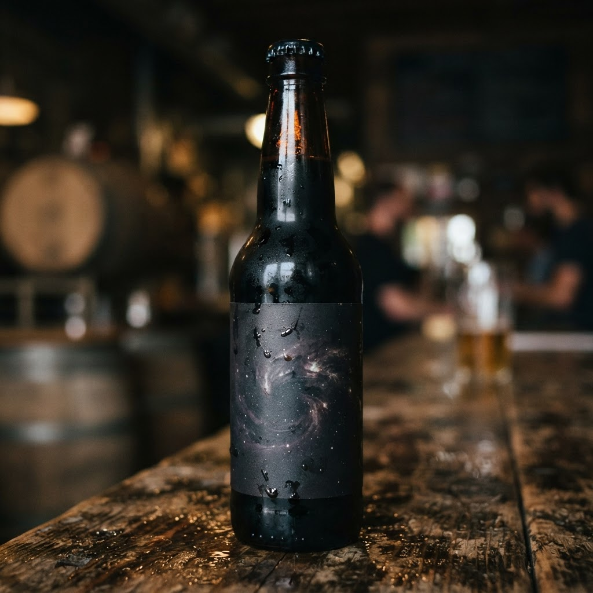
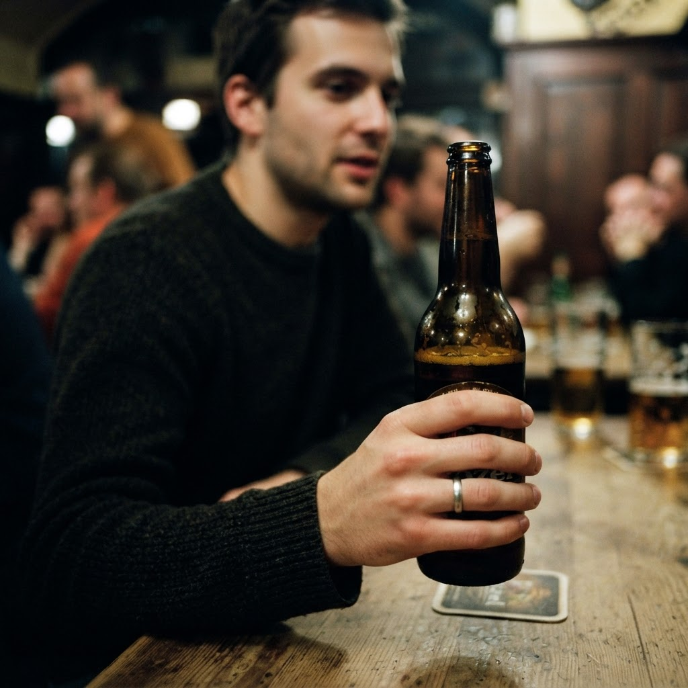

Доставка алкоголя спб 24 с доставкой в Выборгском районе

Содержание
Выборгский район отличается высокой плотностью жилой застройки, что делает логистику ночных заказов крайне востребованной. Профессиональная доставка алкоголя спб 24 с доставкой в Выборгском районе минимизирует ожидание до одного часа, позволяя получить желаемое вне зависимости от времени на часах.
Организация процесса и доставка алкоголя спб 24 с доставкой в Выборгском районе
Основная ошибка при попытке организовать самостоятельную доставку заключается в недооценке сложности ночного трафика и юридических нюансов перемещения товаров. Частные лица часто совершают фатальный просчет, пытаясь выполнить задачу своими силами: отсутствие отлаженных маршрутов и понимания алгоритмов работы служб приводит к потере времени и риску полной остановки процесса. Аналитика показывает, что попытка решить вопрос без профессиональной поддержки чаще всего заканчивается неудачей уже на этапе формирования логистического плана. Работа мастера начинается с оптимизации пути до каждой точки Выборгского района. В ночное время факторы задержки удваиваются, поэтому ключевым инструментом становится жесткое планирование каждого этапа. Мы исключаем человеческий фактор, настраивая передачу заказов через проверенные каналы. Это позволяет достичь целевого показателя: получение товара в течение шестидесяти минут после оформления заявки. Самостоятельный подход всегда проигрывает системному, так как не учитывает динамику изменения дорожной обстановки и специфику ночного сектора услуг.
Пошаговый алгоритм выполнения доставки
Процесс начинается с точного определения локации. После подтверждения заказа оператор передает данные курьеру, который находится в ближайшем секторе Выборгского района. Это первый шаг, обеспечивающий оперативность. Второй этап — проверка комплектности заказа, что исключает ошибки при передаче продукции. Третий этап предполагает движение по заранее проложенному маршруту, который учитывает текущую загруженность магистралей. Четвертый этап — непосредственное вручение заказчику. Каждое действие строго регламентировано, чтобы уложиться в норматив одного часа. Использование навигаторов с обновляемыми данными о пробках позволяет корректировать путь в реальном времени. Если курьер встречает препятствие, система автоматически пересчитывает оптимальный вектор движения. Завершение работы фиксируется в момент передачи товара, что подтверждает выполнение обязательств в полном объеме. Подобная пошаговая структура гарантирует стабильность услуги, превращая хаотичные ночные запросы в предсказуемый бизнес-процесс с высокой долей успешных завершений.
Гарантируете ли вы доставку в течение одного часа?
Мы обеспечиваем доставку в течение часа за счет грамотного распределения курьеров по ключевым точкам района. Системный подход к логистике и знание специфики ночного города позволяют нам соблюдать заявленные сроки независимо от обстоятельств.
Итог
Итог всегда один: назвать следующий шаг покупателю — оформить заказ и получить его в течение часа в своём районе.
Заказать доставку
Оформите заказ сейчас: привезём за 40-60 минут в любой район Петербурга, круглосуточно.
ПризывНаши статьи
 Доставка вина спб 24 часа с доставкой в Выборгском районеВыборгский район характеризуется высокой плотностью жилой застройки и потребностью в качественном ночном сервисе. Организация логистики для тех, кому нужна д…Доставка алкоголя спб с доставкой в Выборгском районеВыборгский район отличается высокой плотностью жилой застройки, что делает логистику критическим фактором успеха. Оперативная доставка алкоголя спб с доставк…
Доставка вина спб 24 часа с доставкой в Выборгском районеВыборгский район характеризуется высокой плотностью жилой застройки и потребностью в качественном ночном сервисе. Организация логистики для тех, кому нужна д…Доставка алкоголя спб с доставкой в Выборгском районеВыборгский район отличается высокой плотностью жилой застройки, что делает логистику критическим фактором успеха. Оперативная доставка алкоголя спб с доставк…
Сколько стоит где купить пиво в спб с доставкой в Выборгском районеВыборгский район отличается высокой плотностью жилой застройки, что делает логистику быстрой доставки напитков крайне эффективной. Жители района всё чаще зад…
Сколько стоит купить ящик пива спб с доставкой в Выборгском районеВыборгский район отличается высокой плотностью жилых кварталов, что создает стабильный спрос на услуги оперативной логистики в ночное время. Когда возникает …